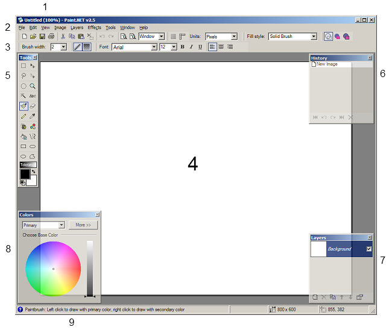

Main Window
The Paint.NET user interface is broken up in to 9 major areas:

-
Title Bar
This tells you the name of the image you are working with, as well as the current zoom level and the version of Paint.NET you are using.
-
Menu Bar
This is where you can access the various menu items. Quite often, commands accessible from this location will be referenced using Menu → Command notation. For example, File → Exit means to clicking on the File menu, and then click on the Exit command.
-
Toolbar
Right below the menus there are several icons and controls for executing various commands or adjusting certain global drawing options.
-
Image canvas
This is where the image is visible, and is the area where you may draw and perform other actions.
-
Tools Window
This where the active tool is highlighted, and where you may choose from other tools. It is also where the selected primary and secondary colors are displayed.
-
History Window
Everything you've done to an image since you opened it is listed in this window.
-
Layers Window
Every image contains at least one layer, and this window is your primary area for managing them.
-
Colors Window
This is the primary area for selecting colors to draw with. It consists of a color wheel and a brightness slider. If you have expanded the window with the "More" button then it will also contain several controls for fine tuning and exactly specifying color values.
-
Status Bar
This area is divided into several sections. The first, on the left, displays quick help and status information. The next sections display rendering progress (if pertinent), image size, and the cursor location within the image.
Copyright © 2005 Rick Brewster, Chris Crosetto, Tom
Jackson, Michael Kelsey, Brandon Ortiz, Craig Taylor, Chris Trevino, and Luke Walker. Portions Copyright
© 2005 Microsoft Corporation. All Rights Reserved.